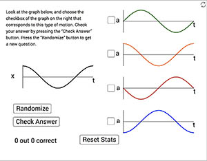
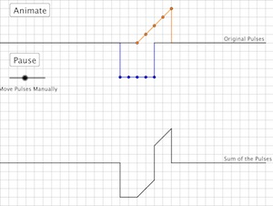
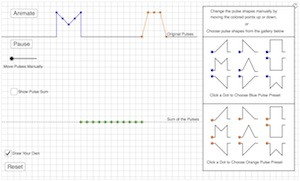

|
Simple Harmonic Motion, Circular Motion, and Transverse Waves
This simulation is an exploration of the relationships between Simple Harmonic Motion, Uniform Circular Motion, and Transverse Wave Motion.
|

|
Simple Harmonic Motion: Mass on a Spring
This simulation shows the oscillation of a box attached to a spring. Adjust the initial position of the box, the mass of the box, and the spring constant. Use the Run, Pause, Reset, and Step buttons to examine the animation. Check or uncheck boxes to view/hide various information.
|
|

|
Oscillation Graphs Quiz
In this "quiz" you will be shown a motion graph for an oscillating object. It can be a position, velocity, acceleration, or net force graph - each graph is vs. time. From four other graphs of a different aspect of the object's motion, you must choose the one that matches the motion shown in the original graph. After you check you answer you can create a new randomly selected graph and try again, over and over.
|

| Simple Harmonic Motion Tutorial
This is a multi-step tutorial on Simple Harmonic Motion, showing derivations of the equations for position, velocity, acceleration, and period of an object in simple harmonic motion.
|

| Waves Tutorial
This is a multi-page tutorial on the basics of mechanical waves. It incorporates many of the simulations listed separately in this menu, but also includes many animations and a lot of general information about waves. Each page has links at the bottom that lead you to the next (or previous) page in the tutorial.
|

| Wave Pulse Interference and Superposition
This simulation allows students to observe the superposition of two wave pulses of varying height and width.
This is an animated simulation of the superposition of two waves pulses. The sliders can be used to change the height and width of the pulses, as well as the animation speed. Use the buttons to start or stop the animation.
|
|

| Wave Pulse Interference and Superposition 2
This is a simulation of two wave pulses moving along the same string in opposite directions. When the two pulses overlap, their sum is shown on the bottom black string. The sum at any given point along the string is simply the sum of the displacements from equilibrium of each of the individual pulses at that point. This is called the principle of superposition.
|
|

| Wave Pulse Superposition Practice
This is a simulation of the interference of two wave pulses on a string. Choose the shapes of the pulses either by manually moving the orange and blue points up or down or by selecting from the gallery of pre-set pulse shapes on the right.
To practice pulse addition, uncheck the "Choose Pulse Sum" check box, and select the "Draw Your Own" checkbox. Move the pulses manually so that they partially or completely overlap. Now move the green points to make your prediction of the shape of the sum of the two pulses. When you think you have the correct shape, choose "Show Pulse Sum" to see if you were correct. Note: the green dots can be moved left and right as well as up and down.
|

| Superposition of Transverse Waves
Simulation of the superposition of two waves moving in the same medium. |

| Oscillations
Simple Harmonic Motion animation relating SHM to uniform circular motion. |

| Oscillations
Simple Harmonic Motion animation relating simple harmonic motion to uniform circular motion. Compare two waves phase shifted relative to one another.
|

| Longitudinal Waves
Animated longitudinal travelling and standing waves.
|

| Longitudinal and Transverse Wave Basics
This simulation shows standing waves both on strings and in open and closed air columns.
Use the buttons to choose waves on a string or waves in air columns, as well as the particular harmonic. Use the check boxes to show or hide the transverse and longitudinal displacement waves, as well as the pressure variation wave.
|

| Standing Waves
This is a simulation of two cars moving in one dimension. You can adjust the initial position, initial velocity, and acceleration of each of the cars. When the run button is pressed, you can watch an animation of the motion of the cars and also see the position vs. time graph for each of the cars. |

| Standing Waves on Strings
Simulation of standing waves on strings.
Use the sliders to adjust the vibrational frequency, the linear density of the string, and the string tension.
|

| Wave Pulse Reflection (Free & Fixed Ends)
This is a simulation of a wave pulse bouncing off the end of a string. The string's end can be fixed or free, and there are options for showing the undisturbed incident and reflected waves. |

| Air Column Resonance
This simulation is intended to show how the process of sound wave resonance in air columns works.
|

| Air Column Resonance with Longitudinal Waves
This is a another simulation of sound wave interference in air columns. This version of the simulation allows you to look at the longitudinal version of the first two standing waves. As with their transverse counterparts, when these two longitudinal waves align perfectly, resonance occurs. Adjust the slider to find the various resonances and look for the relationship between the length of the tube and the wavelength of the wave. Note that this relationship depends on whether the far end of the tube is open or closed.
|

| The Doppler Effect & Sonic Boom
Explore the Doppler Effect for sound and Sonic Boom.
Use the sliders to adjust the speed of the sound source and the sound observer.
|

| Surface Wave Interference in 3D
This is a 3D simulation showing the interference of surface waves (like waves on water). View from various angles and adjust the frequency, amplitude and distance between the two wave sources.
|

| Surface Waves
This is a simulation of a surface wave. Use the sliders to adjust the amplitude, wavelength, and speed of the wave. Use the checkbox to show that the particle motion in the wave is circular.
|